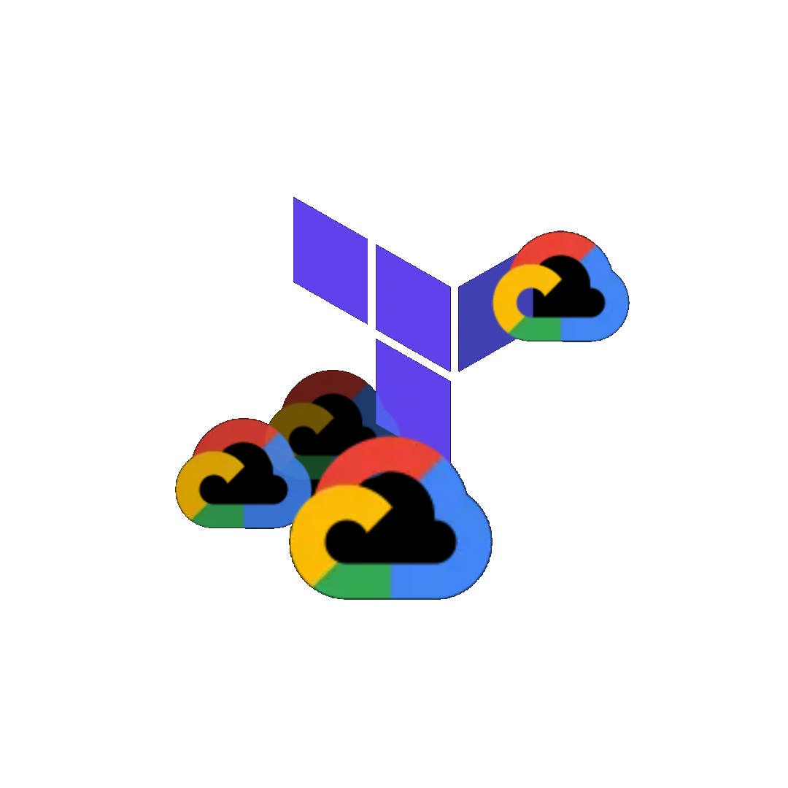

Modernizing Enterprise Infrastructure on Google Cloud Platform

As organizations grow, maintaining legacy cloud environments can become a bottleneck to scalability, security, and developer velocity. Client partnered with our engineering team to migrate and modernize its core ERPNext infrastructure on Google Cloud Platform (GCP).
By leveraging Google Cloud Foundation Fabric (CFF) modules and implementing a modular, three-state Infrastructure as Code (IaC) model using Terraform, we successfully transformed Client's infrastructure. The new deployment delivers zero-public-IP network security, automated CI/CD application updates, resilient stateful storage, and significant cost savings.
By leveraging Google Cloud Foundation Fabric (CFF) modules and implementing a modular, three-state Infrastructure as Code (IaC) model using Terraform, we successfully transformed Client's infrastructure. The new deployment delivers zero-public-IP network security, automated CI/CD application updates, resilient stateful storage, and significant cost savings.
Quick links
The Challenge
Client required a production-grade environment capable of hosting critical enterprise resources without compromising on security or operational flexibility. Key challenges included:
- Blast Radius Risks: The need to ensure that non-production testing, experiments, or teardowns could never inadvertently disrupt production databases or routing configurations.
- Security Exposure: Eliminating public IP addresses on application servers while retaining seamless administrative access and automated software updates.
- Cost vs. Reliability: Designing a staging environment that utilized cost-effective, preemptible compute resources (Spot VMs) without risking data loss or accumulating orphaned storage disks.
Technical Architecture Overview
To meet these requirements, we designed a multi-tiered topology using GCP Global Load Balancers that proxy web traffic down to internal, private Compute Engine instances.
Key Topology Highlights
- Production Environment (erp.client.com): Serves live enterprise traffic via production-glb to a high-availability n2d-standard-8 instance in us-east4-a.
- Staging Environment (beta.erp.client.com): Directs developer traffic via spot-glb to a cost-optimized n2d-standard-2 Spot VM in us-central1-a.
The Three-State Terraform Model
Instead of relying on a monolithic state file, we split the infrastructure into three completely isolated Terraform backends:
- shared State (backend-shared.hcl): Manages foundational resources — including VPC networking, Cloud NAT, external static IPs, global Load Balancers, IAM access policies, Secret Manager, and Cloud Build triggers.
- test State (backend-test.hcl): Owns the ephemeral Spot VM, persistent test storage volumes, snapshot policies, and automated recovery logic.
- prod State (backend-prod.hcl): Handles dedicated production Compute Engine instances, system boot volumes, and persistent data drives.
How Use Cases Were Covered
- Zero-Public-IP Security Profile: All Compute Engine instances run on internal IP addresses only. Outbound internet access for software dependencies (apt) is routed securely via Cloud NAT. Administrative SSH access is granted strictly through Identity-Aware Proxy (IAP) tunnels, eliminating public jump boxes.
- Cost-Efficient Staging Framework: The test environment runs on preemptible Spot VMs. Combined with automated daily disk snapshot schedules (02:00 UTC, 7-day retention), Client achieves maximum cost efficiency with guaranteed data durability.
- Continuous Delivery Automation: Cloud Build triggers integrate directly with GitHub, automating application migrations and builds over secure IAP tunnels whenever code is pushed.
Balancing Automation with Conscious Control
A mature infrastructure framework automates repetitive operations while keeping critical governance controls manual. Here is how we established that balance:
What We Automated
- Infrastructure Provisioning: VPCs, Cloud NAT, firewall boundaries, Load Balancers, SSL configurations, and IAM roles are fully codified via Terraform.
- Storage Initialization: Custom boot startup scripts (startup_script.sh) automatically detect new storage drives, format them to ext4, mount them to /data, and register them in /etc/fstab.
- Application Updates: Test deployments run automatically via Cloud Build triggers executing bench migrate && bench build upon code check-ins.
- Disaster Recovery: Daily automated snapshot policies safeguard both boot and data volumes.
What We Kept Consciously Manual
- Production Auto-Deployments: To ensure strict governance, the automated production deployment trigger (app-deploy-prod) is set to disabled = true by default. Production code pushes require deliberate manual invocation.
- Deploy Key Metadata Pairing: Registering the generated deployment public SSH key to GCP project metadata remains an intentional, one-time manual verification step.
- Filesystem Partition Expansion: While expanding storage size via Terraform resizes the cloud block volume, extending the OS filesystem requires an explicit operator command (sudo resize2fs) to prevent inadvertent partition corruption.
Technical Challenges & Engineering Solutions
Challenge 1: Resolving Cross-State Circular Dependencies
Problem: The global Load Balancer lives in the shared state, but the Unmanaged Instance Groups it targets are created alongside the VMs in the test and prod states. During initial creation, the shared state could not resolve the instance group links because the compute instances did not yet exist.
Solution: We established a clear, three-phase deployment sequence:
Problem: The global Load Balancer lives in the shared state, but the Unmanaged Instance Groups it targets are created alongside the VMs in the test and prod states. During initial creation, the shared state could not resolve the instance group links because the compute instances did not yet exist.
Solution: We established a clear, three-phase deployment sequence:
- Apply shared state to establish the VPC network, firewall rules, and Load Balancer framework.
- Apply test and prod states to create the VMs, persistent storage disks, and local Unmanaged Instance Groups.
- Re-apply shared state to dynamically bind the newly created instance groups into the active Load Balancer backend service pools.
Challenge 2: Mitigating Data Loss & Disk Sprawl on Spot VMs
Problem: Standard Spot VM re-creations often replace inline boot/data disks, leading to potential data loss or an accumulation of orphaned, unmapped storage drives.
Solution: We introduced independent disk lifecycles using reuse_existing_disks = true. Boot and data drives were promoted to standalone google_compute_disk resources with auto_delete = false. When a Spot VM is preempted or re-created, the instance automatically reattaches the existing, unformatted independent storage drives — zero data lost, zero orphan disks accumulated.
Problem: Standard Spot VM re-creations often replace inline boot/data disks, leading to potential data loss or an accumulation of orphaned, unmapped storage drives.
Solution: We introduced independent disk lifecycles using reuse_existing_disks = true. Boot and data drives were promoted to standalone google_compute_disk resources with auto_delete = false. When a Spot VM is preempted or re-created, the instance automatically reattaches the existing, unformatted independent storage drives — zero data lost, zero orphan disks accumulated.
Challenge 3: Load Balancer Health Probe Routing to Private VMs
Problem: Initial Load Balancer checks reported UNHEALTHY status (502 Gateway Errors) because health check probes were blocked from reaching the private application instances.
Solution: We configured specific firewall rules (allow-lb-to-production-vm) allowing TCP traffic on ports 80, 443, and 8000 from Google's health check IP ranges for instances carrying the web-frontend tag. We also aligned the Load Balancer backend protocol to HTTP over port 80 to match Nginx's internal proxy behavior.
Problem: Initial Load Balancer checks reported UNHEALTHY status (502 Gateway Errors) because health check probes were blocked from reaching the private application instances.
Solution: We configured specific firewall rules (allow-lb-to-production-vm) allowing TCP traffic on ports 80, 443, and 8000 from Google's health check IP ranges for instances carrying the web-frontend tag. We also aligned the Load Balancer backend protocol to HTTP over port 80 to match Nginx's internal proxy behavior.
Business Results & Impact
- Zero-Downtime Infrastructure Operations: Decoupled states allow engineering teams to maintain, upgrade, or destroy test environments without risking production uptime.
- Hardened Security Posture: Removing public IP addresses across all compute instances and enforcing IAP-only SSH drastically reduced the environment's external attack surface.
- Optimized Total Cost of Ownership (TCO): Combining Spot VMs with stateful persistent storage reduced non-production cloud spend significantly while guaranteeing data durability.

© Copyright 2024. All right Reserved.